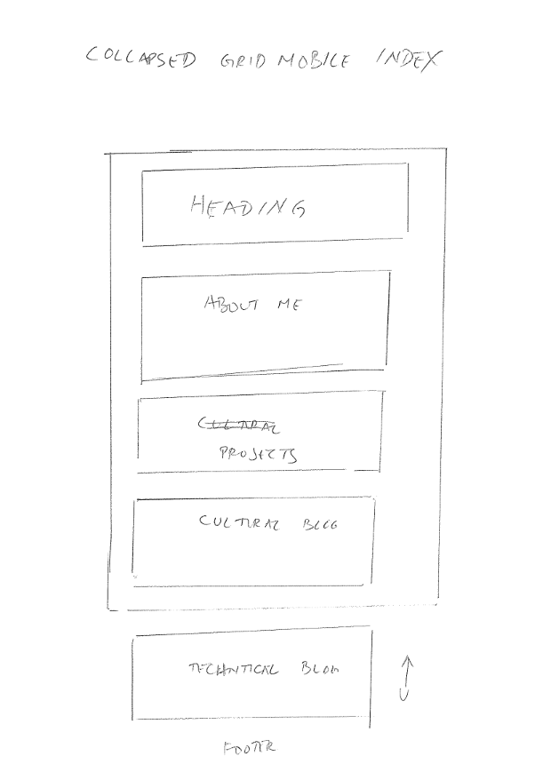
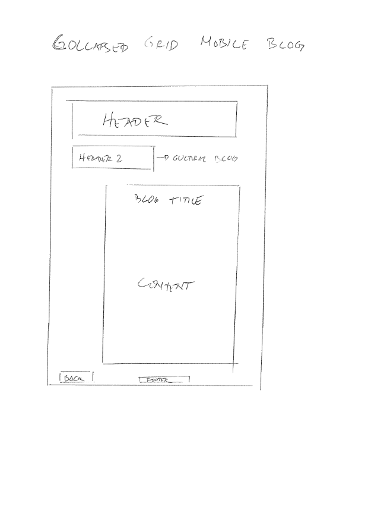
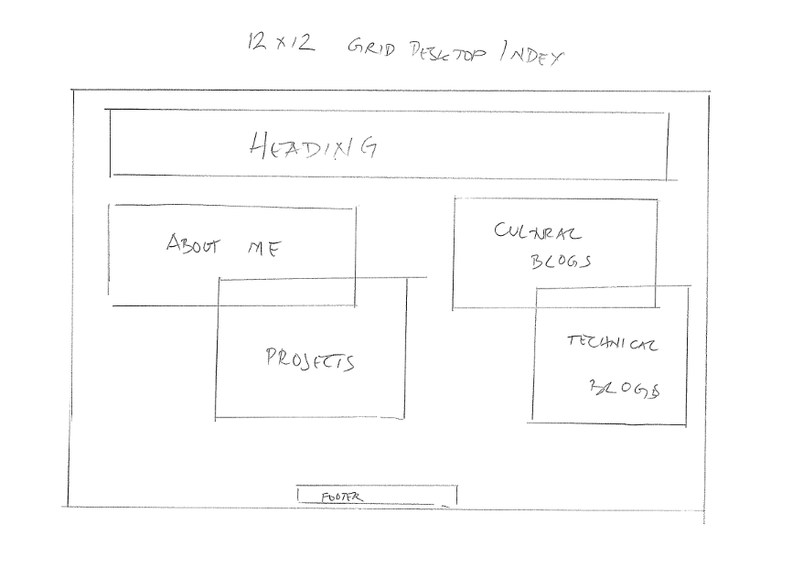
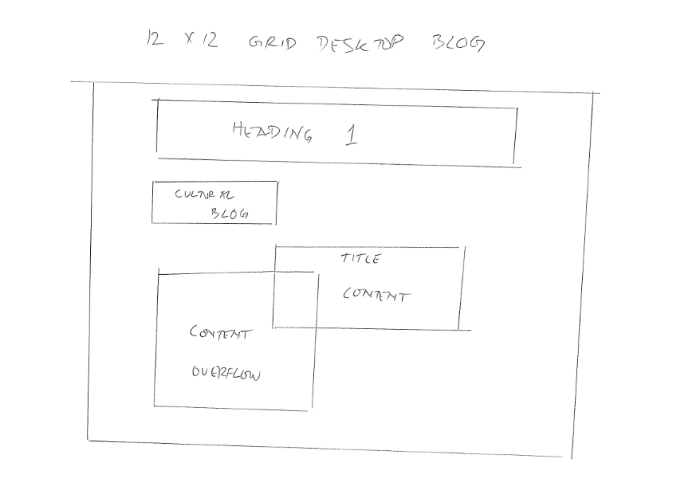

Welli Ali Abdullah
T3: Design to Web
Responsive site is a site that adapt to the screen size of the device used to view the site. It is important for good user experience. Most users do not want to scroll multiple times (especially sideways) to view the whole site. Also the interaction can be different depend on the device. For example, on mobile device users need to touch the screen to navigate while on desktop/laptop users use cursor moved by a device i.e. mouse
Mobile first design is to acknowledge that it is more difficult to design a site for mobile where the screen size is limited. Thus it is best to design for a mobile first and then adapt for larger screens where it is easier to add more elements.
Frameworks are pre existing set of code that can added to your site so you can re-use them. The pro of frameworks are it can make your work easier and faster since you don't need to rewrite them. The cons are it can contain code that you don't need to use so depending on it size it can slows the loading time. For example, Bootstrap frameworks offers more functionality than Skeleton frameworks but it is also bigger in size.
Wireframe is an initial design using sketch or simple graphics to represent the layout of a page. It is used to developing the layout and structure of a webpage without all the fonts, colors that can distract. It is also important to provide initial scope of the project to avoid project's creep.
My wireframes for mobile index and blog pages:


My wireframes for desktop index and blog pages:


My wireframes is initially design to play round with elements' position using css but I found it hard to implement with the current CSS knowledge that I have.